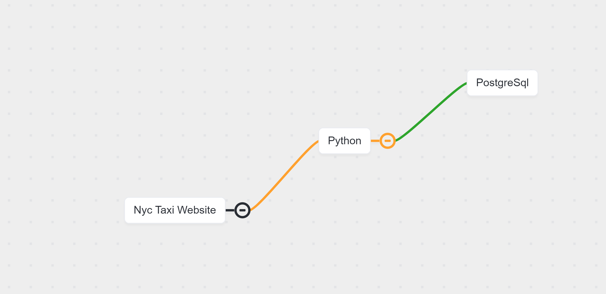
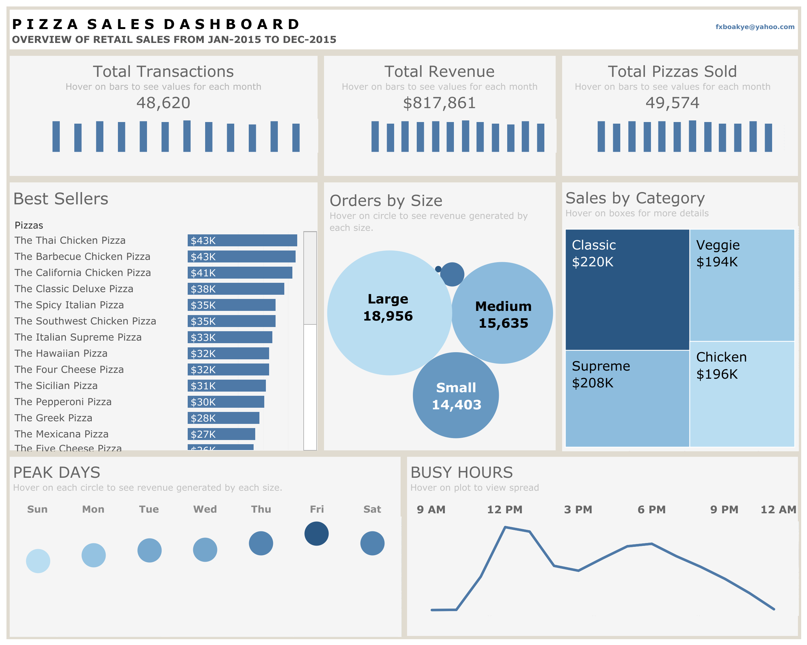

This dockerized pipeline extracts a record of taxi trips from the New York Taxi's website in the form of a parquet file. The data undergoes basic cleaning and is then fed into a PostgreSQL database.
I also established a Prefect instance to display the workflow UI for the ingestion script and constructed a pgAdmin instance to perform additional data cleaning using SQL commands.

Cleaned the dataset for the pizza retail store that was obtained from Maven Analytics using Python. I then created a Tableau dashboard displaying information such as peak times, peak days, top sellers, etc.
For this project, I ran an exploratory data analysis on the Canada Immigration dataset I downloaded from Kaggle using Python. I was able to identify which continents and nations had the highest immigration rates to Canada during various time periods.